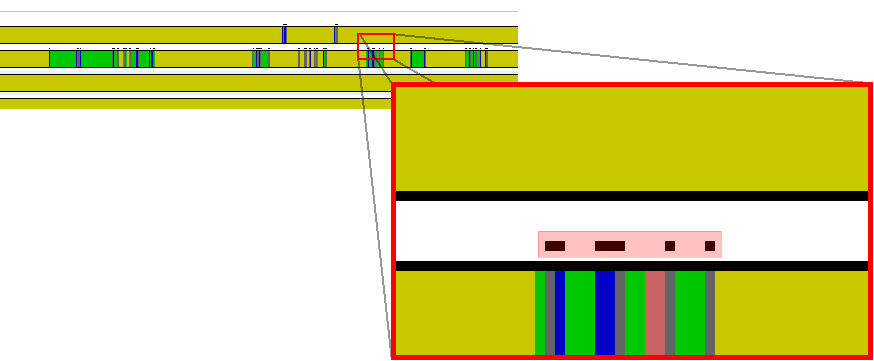
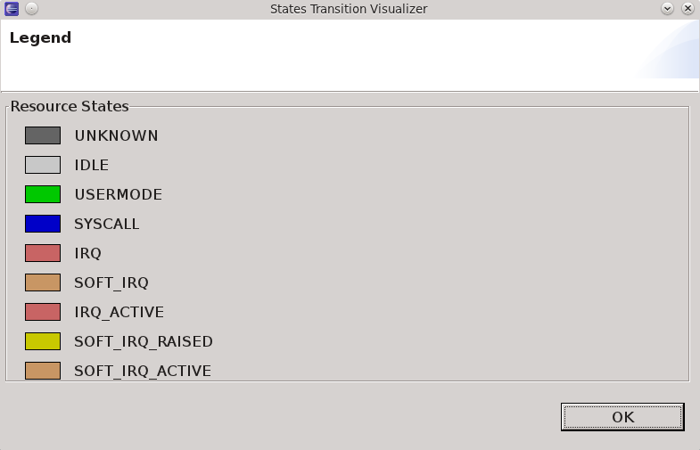
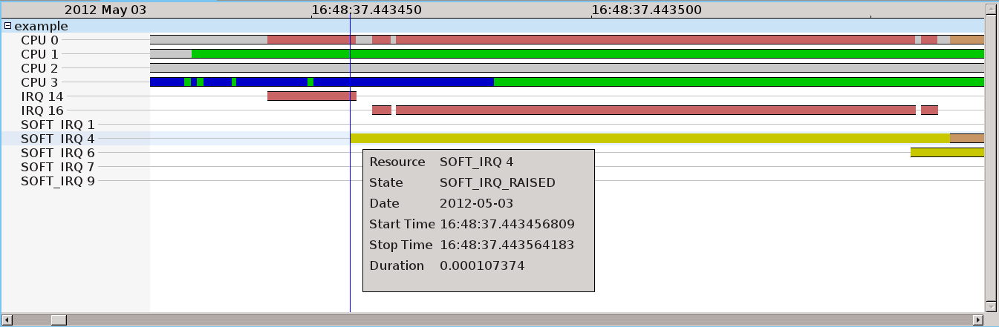
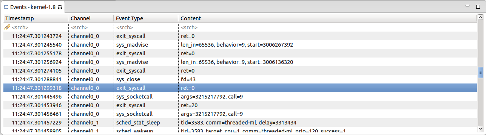

| LTTng Kernel Analysis | ||
|---|---|---|
|
|
|
|
| LTTng | Limitations | |
Historically, LTTng was developped to trace the Linux kernel and, over time, a number of kernel-oriented analysis views were developped and organized in a perspective.
This section presents a description of the LTTng Kernel Perspective.
The LTTng Kernel perspective is built upon the Tracing Perspective, re-organizes them slightly and adds the following views:

The perspective can be opened from the Eclipse Open Perspective dialog ( Window > Open Perspective... > Other).

The Control Flow View is a LTTng-specific view that shows per-process events graphically. To enable it, select Control Flow under LTTng within the Show View window ( Window -> Show View -> Other...):

You should get something like this:

The view is divided into the following important sections: process tree, process TID, PTID and birth time, states flow and the toolbar.
The following sections provide detailed information for each part of the Control Flow View.
Processes are organized as a tree within this view. This way, child and parent processes are easy to identify.

The layout is based on the states computed from the trace events.
A given process may be shown at different places within the tree since the nodes are unique (TID, birth time) couples. This means that if process B of parent A dies, you'll still see it in the tree. If process A forks process B again, it will be shown as a different node since it won't have the same birth time (and probably not the same TID). This has the advantage that the tree, once loaded, never changes: horizontal scrolling within the states flow remains possible.
The TID column shows the process node's thread ID and the PTID column shows its parent thread ID (nothing is shown if the process has no parent).
This part of the Control Flow View is probably the most interesting one. Using the mouse, you can navigate through the trace (go left, right) and zoom on a specific region to inspect its details.
The colored bars you see represent states for the associated process node. When a process state changes in time, so does the color. States colors legend is available through a toolbar button:

This dark yellow is what you'll see most of the time since scheduling puts processes on hold while others run.
The vertical blue line is the current time indicator.
The states flow is usable with the mouse. The following actions are set:
When the current time indicator is changed (when clicking in the states flow), all the other views are synchronized. For example, the Events View will show the event matching the current time indicator. The reverse behaviour is also implemented: selecting an event within the Events View will update the Control Flow View current time indicator.
You'll notice small dots over the colored bars at some places:

Those dots mean the underlying region is incomplete: there's not enough pixels to view all the events. In other words, you have to zoom in.
When zooming in, small dots start to disappear:

When no dots are left, you are viewing all the events and states within that region.
To zoom in on a specific region, right-click and drag the time ruler in order to draw a time range:

The states flow horizontal space will only show the selected region.
Hover the cursor over a colored bar and a tooltip will pop up:

The tooltip indicates:
The Control Flow View toolbar, located at the top right of the view, has shortcut buttons to perform common actions:

The Previous event and Next event buttons update the current time indicator so that it's on the previous or next event.
The Previous process and Next process buttons select the previous and next process node within the process tree.
This view is specific to kernel trace. To open it, go in Window -> Show View -> Other... and select LTTng/Resources in the list.

This view shows the state of system resources i.e. if changes occured during the trace either on CPUs, IRQs or soft IRQs, it will appear in this view. The left side of the view present a list of resources that are affected by at least one event of the trace. The right side illustrate the state in which each resource is at some point in time.
Just like other views, according to which trace points and system calls are activated, the content of this view may change from one trace to another.
Each state are represented by one color so it is faster to say what is happening.

To go through the state of a resource, you first have to select the resource and the timestamp that interest you. For the latter, you can pick some time before the interesting part of the trace.

Then, by selecting Next Event, it will show the next state transition and the event that occured at this time.

This view is also synchronized with the others : histogram, events view, control flow view, etc.
See using the mouse and zoom region .
See Incomplete regions.
See Toolbar.
The LTTng Kernel Events View is the plain TMF Events Views except that it provide its own specialized viewer to replace the standard one. In short, it has exactly the same behaviour but the layout is slightly different:

|
|

|
|
| LTTng | Limitations |